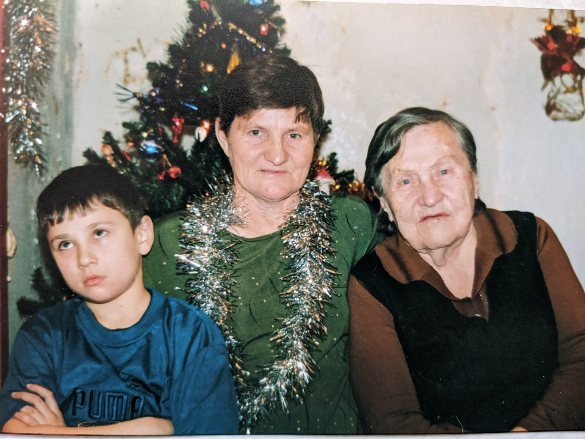

<!-- saved from url=(0016)http://localhost -->
<!DOCTYPE html>
<html xmlns="http://www.w3.org/1999/xhtml" lang="en" xml:lang="en" dir="ltr">
<head>
<meta http-equiv="Content-Type" content="text/html; charset=utf-8" />
<style type="text/css">
html, body { width:100%; height:100%; padding:0; margin:0; }
body { -ms-overflow-style: none; overflow:auto; overflow-x:hidden; }
* { padding: 0; margin: 0; border: 0; font-family: Arial; font-size: 10pt; line-height: 1.3em; word-wrap: break-word; text-indent: 0; text-align: left; }
h1 { font-size: 1.4em; font-weight: normal; margin-bottom: 0.8em; text-align: center; }
h2 { font-weight: bold; margin-bottom: 0.5em; }
p { margin-bottom: 1em; }
a { text-decoration: none; color: #0000FF; }
a:hover, a:visited { text-decoration: none; }
.c { clear: both; }
.cwrap { margin: 0.8em; }
.reps { padding-top: 5px; border-top: 1px solid #000; font-size: 0.8em; }
.mblock { display:inline-block; float: left; font-size: 0.8em; margin: 0 1em 0.3em 0; padding: 0; }
.m1block { float: left; font-size: 0.8em; margin: 0 1.2em 1em 0; }
.dblock { float: left; font-size: 0.8em; }
.pblock { margin-bottom: 1em; }
.pbreak { page-break-before: always; }
.hr {width: 100%; border-bottom: 1px dotted #ccc; margin-bottom: 0.3em; }
.genhr { display:inline-block; width:99%; border: 1px solid #bbb; padding: 0.3em; color: #000; background: #ccc; margin-bottom: 0.5em;margin-top: 1em; }
.g1enhr { border: 1px solid #bbb; padding: 0.3em; color: #000; background: #ddd; margin-bottom: 0.5em; }
</style>
</head>

<body>
<script>
window.parent.postMessage({event_id: 'gmsg', data: 'g136'}, "*");
</script>
<div class="cwrap">
<h1>Кайдаш (Жигарева) Екатерина &nbsp;Ивановна</h1>
<div class="mblock" style="width: 200px"><a href="io12_13_42.jpg" target="_blank"></a>Новый год (фрагмент). </div><p>Родилась: 20.01.1949, Пос. Уховский, Куйтунского района<br />Возраст: 73<br /></p><p>Отец: <a href="p66.html?s=40e5d0d15e8f2d8e">Жигарев &nbsp;Иван &nbsp;Митрофанович</a><br />Мать: <a href="p65.html?s=40e5d0d15e8f2d8e">Жигарева &nbsp;(Устюжанина) Валентина &nbsp;Иннокентьевна</a><br />Брат: <a href="p71.html?s=40e5d0d15e8f2d8e">Жигарев &nbsp;Виктор &nbsp;Иванович</a><br />Брат: <a href="p73.html?s=40e5d0d15e8f2d8e">Жигарев &nbsp;Анатолий &nbsp;Иванович</a><br />Дочь: <a href="p4.html?s=40e5d0d15e8f2d8e">Ацута (Кайдаш) Елена &nbsp;Александровна</a><br />Муж: <a href="p43.html?s=40e5d0d15e8f2d8e">Кайдаш &nbsp;Александр &nbsp;Семенович</a><br />&nbsp;&nbsp;&nbsp;Сын: <a href="p44.html?s=40e5d0d15e8f2d8e">Кайдаш &nbsp;Владимир &nbsp;&nbsp;Александрович</a><br /></p>
<table style="margin-top: 1em;" width="100%" cellspacing="0" cellpadding="0" border="0">
  <tbody>
  <tr><td><div class="dblock" style="width: 25.77%"><a href="io12.jpg" target="_blank"></a>Новый год. <br />&nbsp;</div><div class="dblock" style="width: 1%">&nbsp;</div><div class="dblock" style="width: 14.48%"><a href="io14.jpg" target="_blank"></a>Рисунок3: 1977, Куйтун. Лето 1977г. Куйтун (Парк)<br />. <br />&nbsp;</div><div class="dblock" style="width: 1%">&nbsp;</div><div class="dblock" style="width: 14.48%"><a href="io26.jpg" target="_blank"></a>Примерно 1953г. Примерно 1953г.<br />. <br />&nbsp;</div><div class="dblock" style="width: 1%">&nbsp;</div><div class="dblock" style="width: 25.77%"><a href="io27.jpg" target="_blank"></a>Рисунок13. На фото: &nbsp;Кайдаш(Жигарева) Екатерина Ивановнасо знакомой Бирюковой Полиной<br />. <br />&nbsp;</div><div class="dblock" style="width: 1%">&nbsp;</div><div class="dblock" style="width: 14.48%"><a href="io28.jpg" target="_blank"></a>Рисунок14. <br />&nbsp;</div><div class="dblock" style="width: 1%">&nbsp;</div>  </td></tr>
  <tr><td><div class="dblock" style="width: 9.8%"><a href="io29.jpg" target="_blank"></a>Примерно 1954г. На фото: ? С ребенком, Жигарева (Устюжанина) Валентина Иннокентьевна с дочкой Кайдаш (Жигарева) Екатерина ИвановнаПримерно 1954г. &nbsp;<br />. <br />&nbsp;</div><div class="dblock" style="width: 1%">&nbsp;</div><div class="dblock" style="width: 21.47%"><a href="io31.jpg" target="_blank"></a>Рисунок17[1]. <br />&nbsp;</div><div class="dblock" style="width: 1%">&nbsp;</div>  </td></tr>
  </tbody>
</table>

<div class="c"></div>
</div>
<div class="pblock c"></div><div class="c"><span class="reps">Дата построения отчёта: 27.04.2022</span></div>
</body>
</html>